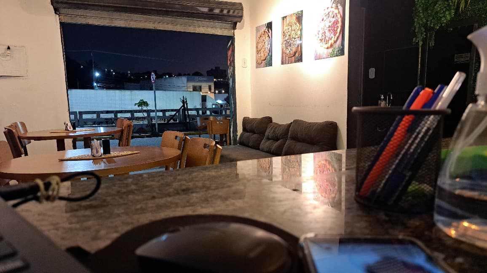
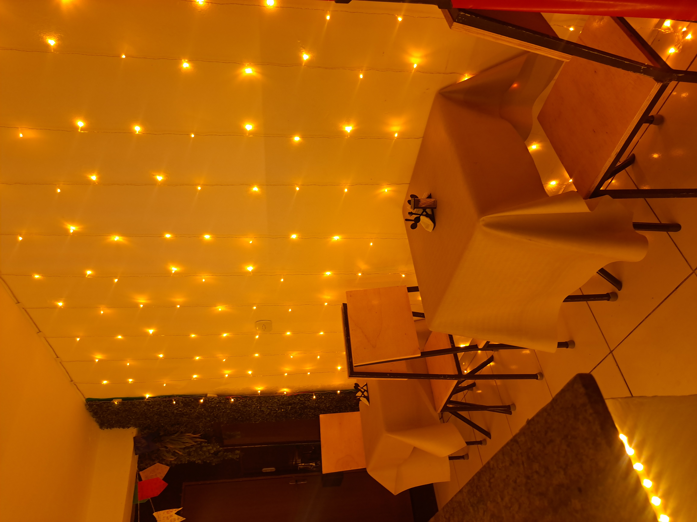
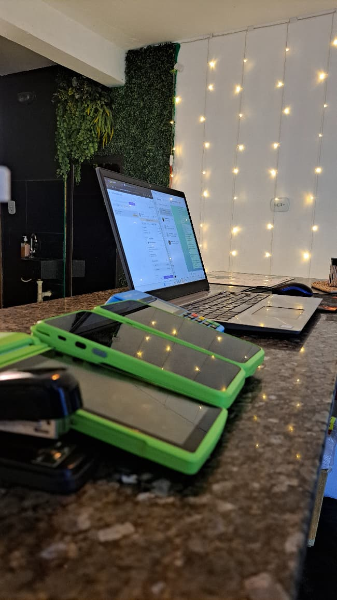

Sobre nós
Bem-vindo(a) à La Vitta Pizzaria, o destino perfeito para os amantes de pizza! Somos especializados em oferecer as melhores pizzas da cidade sem gastar muito.
Da Nossa Casa para a Sua: Uma História de Sabor Nascida em Arcoverde
Nossa jornada começou em 2019, no coração do sertão pernambucano, aqui em nossa querida Arcoverde. O sonho de levar pizzas de qualidade nasceu pequeno, no espaço de nossa casa, onde cada pedido era preparado com o máximo de carinho e dedicação. No início, nosso foco era exclusivo no delivery e na retirada, com o desejo de que o nosso sabor chegasse a cada lar da cidade.
O aroma que saía do nosso forno começou a conquistar paladares e, com o apoio e a confiança de cada cliente, nosso sonho começou a crescer. O que era um pequeno serviço de entregas floresceu e, impulsionados pela vontade de oferecer uma experiência ainda mais completa, conseguimos dar o nosso maior passo.

Hoje, com muito orgulho, abrimos as portas do nosso próprio espaço físico. É um lugar pensado para acolher os amigos e clientes que nos acompanharam desde o início e para receber os novos que chegam a cada dia. De uma pequena área em casa para um ponto de encontro, nossa história é a prova de que, com paixão, qualidade e o apoio da nossa gente, um sonho pode se tornar realidade.
Nossas especialidades
Na La Vitta Pizzaria, orgulhamo-nos das nossas inovadoras pizzas fechadas. Essas tortas únicas e deliciosas são uma experiência obrigatória para qualquer amante da pizza. Também oferecemos uma grande variedade de pizzas tradicionais e especiais feitas apenas com os melhores ingredientes.
Conheça os amantes da pizza na La Vitta
Com uma massa perfeitamente assada, crocante por fora e macia por dentro, e recheios generosos que harmonizam ingredientes frescos e saborosos, cada fatia é uma celebração. Do clássico sabor de muçarela com calabresa a combinações mais elaboradas, a qualidade e o sabor se mantêm inquestionáveis.
Aconchegante

Em meio à agitação do dia a dia, há um refúgio de sabores e sensações em uma pizzaria de bairro, simples em sua apresentação, mas gigante em sua capacidade de acolher. Longe do luxo e da formalidade, é no ambiente rústico e no calor do forno que se encontra uma das experiências gastronômicas mais genuínas.
A magia começa ao cruzar a porta. O aroma de queijo derretido e manjericão paira no ar, despertando memórias e abrindo o apetite. As mesas de madeira, a decoração sem excessos e a iluminação amena convidam a relaxar e a focar no que realmente importa: a companhia e a comida.
Nosso atendimento

O atendimento, sempre cordial e atencioso, transforma clientes em velhos conhecidos. Um sorriso sincero, uma sugestão prestativa e a agilidade em servir demonstram o cuidado e o respeito que a casa tem por quem a escolhe.
Boas Experiências
Essa experiência em uma pizzaria simples, mas aconchegante, nos lembra que a boa culinária não reside na complexidade, mas sim na paixão e na dedicação em oferecer o melhor, transformando uma simples refeição em um momento de puro prazer e contentamento.